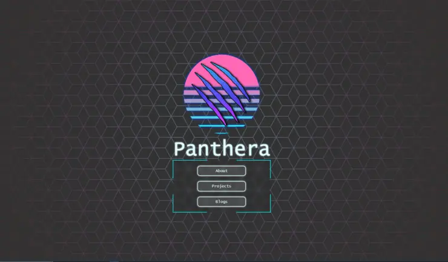
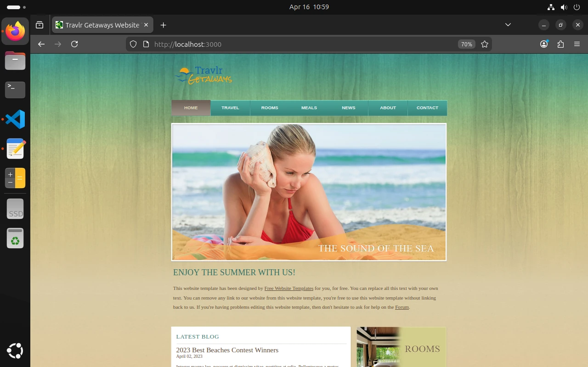
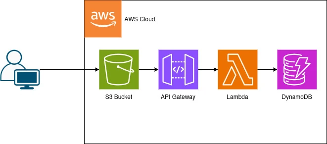
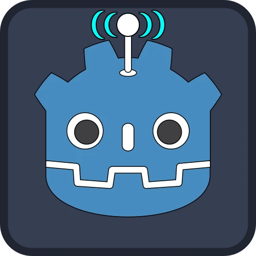
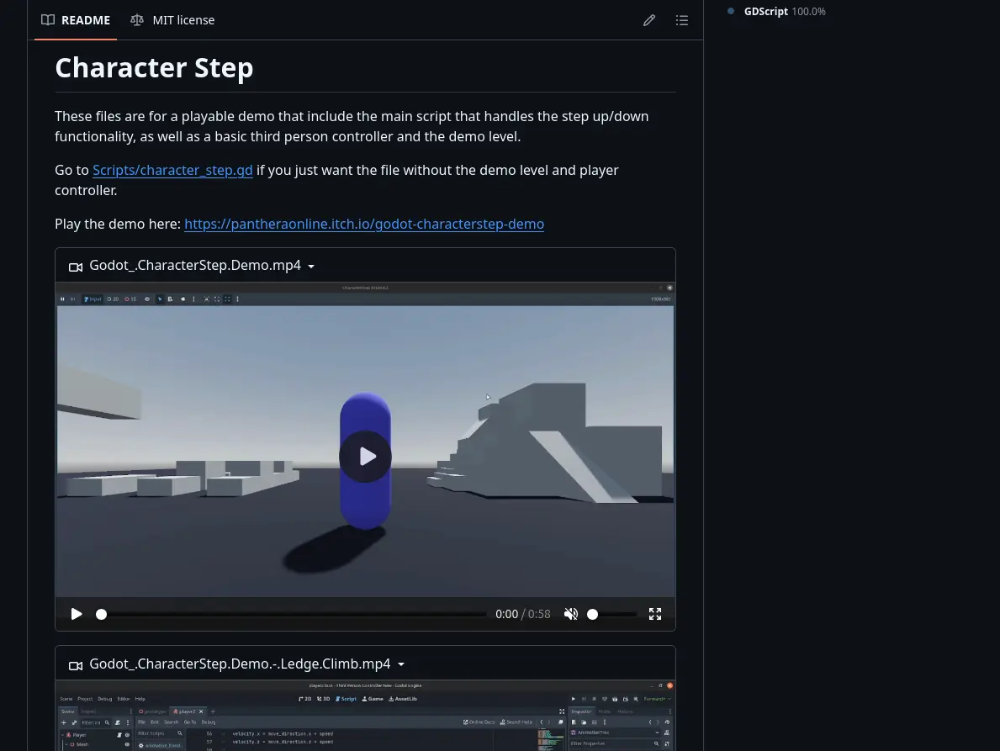
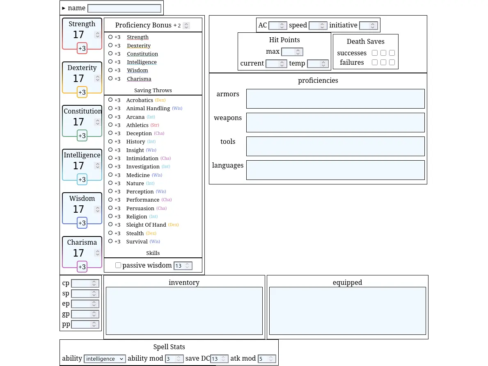
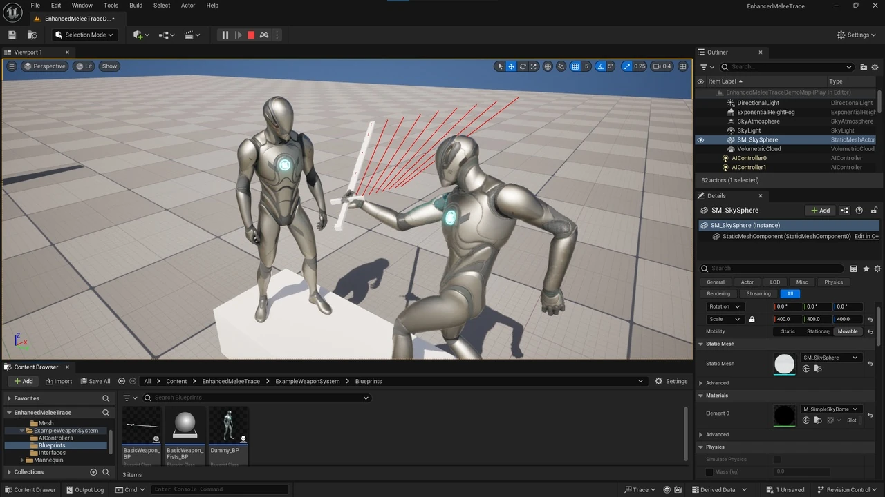
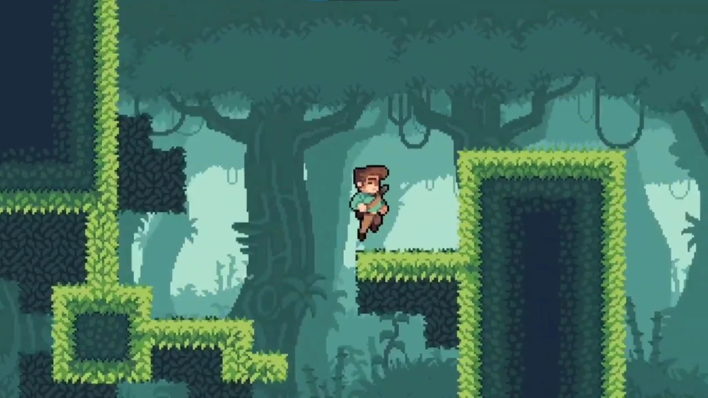

Projects
My Forever Changing Website

I started this webpage as a way to learn web development and as a way to better show what I've worked on. Since then it has gone through many iterations. From a template I found, to a WordPress page, to what it is now.
I originally ditched the template for WordPress for it features, but the lack of customization and generic feel it gave my webpage made me leave to make it all myself. The biggest challenge since then has been keeping this webpage pure frontend so that it can be hosted on GitHub Pages, but still allow for adding things like my projects and posts. One work around I use to use was using Google Drive as a database, then using their API to pull Docs, parse and format them to be styled for the webpage, then add them to the DOM. I've ditched that for now and will be looking for a new hosting platform so I can use a server.
Fullstack Website - Class Final Project

https://github.com/PantheraDigital/SNHURepo/tree/CS-465-Fullstack_Development_1
In this project I took a website template from HTML and CSS to the MEAN stack (MongoDB, Express.js, Angular.js, Node.js). In addition I used Handlebars, Postman, and DBeaver during development.
Other than taking the site to a client/server format, I also added an admin portal that allowed for registered users to login and make changes to the database, changing what was shown on the website.
Cloud QA Website - Class Final Project

https://github.com/PantheraDigital/SNHURepo/tree/CS-470-Full_Stack_Development_2
In this project I took a website template that was using the MEAN stack, containerized it with Docker, then brought it to the cloud with AWS. The website is a QA site that allows users to post, edit, and remove questions and answers. The website is fully cloud based using AWS to allow the website to be significantly more scalable.
Modular Character Controller - Godot

https://github.com/PantheraDigital/Modular-Character-Controller-for-Godot
With my move to Godot I needed a new character controller. This time I focused on improving on where typical finite state machines fail, and that is its flexibility. I didn't want rigid states so I built a version of a state machine where the states are composed from action components, separating the responsibility of specific actions from the state to the components. This allows states to be much more flexible and encourages reusable code.
You can find a demo playable in browser here: https://pantheradigital.itch.io/godot-modular-character-controller
Character Step - Godot

https://github.com/PantheraDigital/GodotCharacterStep
Code for moving objects across jagged surfaces. Performs collision detection and position manipulation to allow objects to "step" up and down from obstacles.
Tabletop Character Sheet Editor

https://pantheradigital.github.io/CharacterSheet/
Character sheet editor for D&D. Handles stat calculations for easier maintenance, organized spell and trait tracking with drag and drop elements, and quick spell adding from a spell database.
Enhanced Melee Trace - Unreal Engine

https://www.fab.com/listings/b3556c78-463b-4610-a81c-1bcb8916e202
In this project I tackled a common problem in game development, collision detection for fast moving objects. The heart of the problem is that computers can only update programs so fast. Each update positions game objects and runs calculations. When an object has a velocity that covers more distance than the game can keep up with every physics update, that object will effectively teleport. This creates the possibility for missed collision, like a car traveling through a wall. To prevent this extra collision checks need to be made in the missed space so that physics can be corrected.
I also wrote a paper about the issue: https://docs.google.com/document/d/1iHzTuZEroXdUIEyYPclzIXDA4Sg2yUvRwt1GIFtNd9I/edit?usp=sharing
EntityController2D - Unity

https://www.fab.com/listings/51702f7a-38f1-4718-938a-6c02227dae01
This was my first real attempt at a character controller, documentation, and a product for others. It's a pack that includes a state machine based character script, input handling, input remapping, and 2d physics handling for walking across various sloped grounds.
Originally this was just for me so that I could make some games, but I found it useful and believed it could help others, so I released it. I also updated it as I went on to make a few games using it.
You can also see the documentation webpage I made for it here: https://pantheradigital.github.io/EntityControllerByPanthera/
And a demo playable in browser here: https://pantheradigital.itch.io/entity-controller-demo